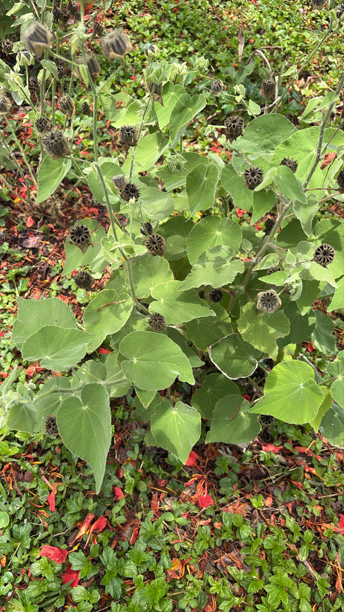

- A Florida native — and the original type specimen that first gave this plant its scientific identity was collected from Tampa Bay in the 1840s by a US Army surgeon named Hulse. The species is named for him.
- For most of the year it is a tall, loosely branching shrub that reads as scraggly. The Florida Native Plant Society describes it plainly: rangy, weedy, not really woody. Both things are true.
- The orange-pink flowers bloom late winter to early spring and are worth the wait. Hummingbirds and native bees work them steadily.
- Four of these were purchased from a Florida native nursery and planted by the pond alongside the native Cannas. The park has two active grants for pond erosion prevention, and this is one of the species going in.
Native to Florida, Texas, New Mexico, Mexico, Cuba, Jamaica, Puerto Rico, and the Caribbean islands. A member of Malvaceae — same family as hibiscus, okra, cotton, and the park's own Silk Floss Tree and Kapok. The type specimen was collected from Tampa Bay.
- The species name hulseanum honors a US Army surgeon named Hulse who collected the original type specimen from Tampa Bay in the 1840s. The holotype — the single reference specimen that defines what this plant is scientifically — came from essentially this neighborhood. For a Florida native botanic park on Tampa Bay, that is a meaningful connection.
- Four plants were purchased from a Florida native nursery by Randy and installed at the edge of the Cypress Pond, to the left of the native Cannas as you face the water. The crushed shell path runs right past them. They have grown from roughly a foot tall to about three feet in two years.
- The Florida Native Plant Society describes the plant honestly: rangy unless cut back periodically, somewhat shrubby but not really woody, noted for being weedy. That assessment is accurate and visible. For much of the year, these plants look like tall weeds at the pond edge. The late winter flowers change that evaluation considerably.
- They are part of a broader and ongoing effort to stabilize the pond banks with native plantings. The park currently holds two grants supporting this work: a $5,000 grant from the Tampa Bay Estuary Program and a $10,000 grant from the Sarasota Bay Estuary Program. This stretch of the Cypress Pond edge will continue to receive new and varied native species as that work progresses.
- A note on naming: the plants were purchased under the common name Red Indian Mallow. That name and Mauve Indian Mallow refer to the same species — Abutilon hulseanum — whose flower color ranges from soft mauve-pink to deeper reddish-orange depending on the individual plant.
Hummingbirds and native bees are documented visitors to the orange-pink flowers. The hibiscus-like flower structure — open, accessible, with a prominent central staminal column — is well-suited to both pollinators.
As a pond-edge native, it contributes to bank stabilization and provides cover for ground-foraging birds and small wildlife along the water's edge.
The plant reseeds readily, which means a healthy colony can maintain itself and spread along the bank over time — a useful quality for an erosion-prevention planting.
Orange-pink, hibiscus-like, five petals with a prominent central staminal column typical of the mallow family. Bloom period: late winter to early spring, roughly February through May. Visited by hummingbirds and native bees.
Small capsule fruits containing seeds. Reseeds readily — short-lived as individual plants but self-maintaining as a colony. Easily grown from seed.
Maple-like, lobed, covered in fine soft hairs. Medium texture. Alternate arrangement.
Upright, loosely branching shrub to 7 feet. Stems are softly woody rather than truly woody. Tends toward a rangy, open habit unless periodically cut back.
Along the pond bank to the left of the native Cannas. The open habit and soft hairy leaves are visible year-round. In late winter, watch for the orange-pink flowers — five petals, central staminal column, the unmistakable mallow family signature.
Mallow-family leaves are generally edible, but this species isn't used as a food plant in Florida.
It has no known toxicity to people, dogs, or cats.
Purchased from a Florida native nursery. Four specimens planted by pond edge alongside native Cannas.

- © Randall Carter (CC-BY-NC), via iNaturalist